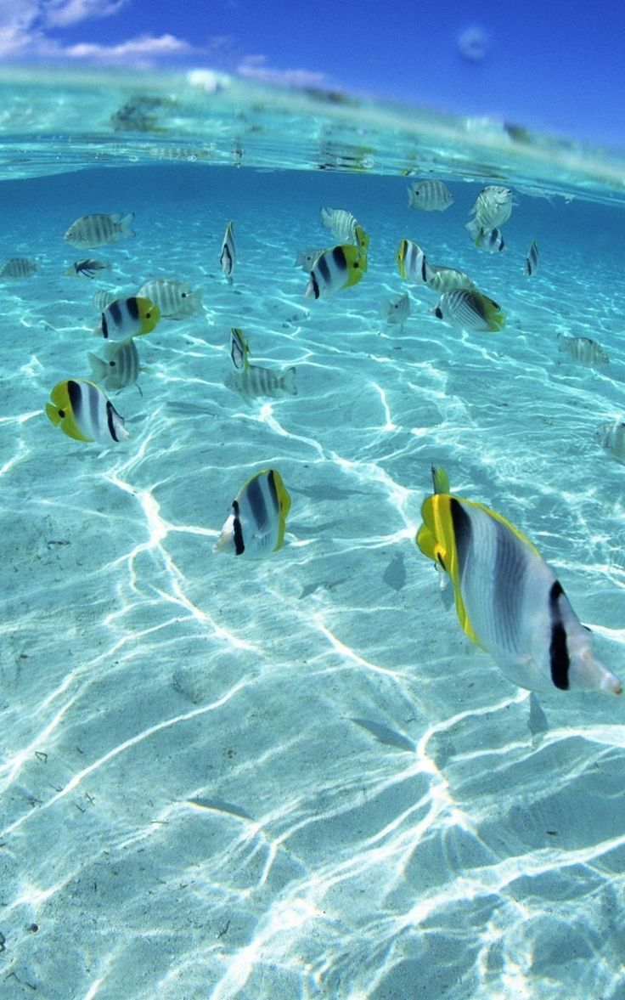

Різноманіття риб
Риби — це група водних хребетних тварин, які дихають зябрами та мають плавці. Вони населяють океани, моря, річки та озера по всьому світу.
Риби мають велике значення для всіх водних екосистем як складова частина харчових ланцюгів та велике економічне значення для людини через споживання їх у їжу.
Популярні види риб
- Акула — один із найдавніших хижаків океану.
- Риба-клоун — відома завдяки мультфільму "У пошуках Немо".
- Короп — популярна риба у ставковому рибництві.
- Сом — донна риба, яка може досягати великих розмірів.
- Форель — мешкає в чистих гірських річках.
Цікаві факти
Чи знали ви, що деякі риби можуть змінювати стать протягом життя? Наприклад, риба-клоун народжується самцем, але пізніше може стати самкою.
Деякі глибоководні риби, такі як світлячкові риби, можуть світитися в темряві завдяки біолюмінесценції.
Риби з електричними органами – Деякі риби, наприклад електричний скат та електричний вугор, можуть виробляти електричні розряди, які використовують для полювання або захисту. Ці розряди можуть досягати напруги до 600 вольт!
Найтриваліші риби – Гренландська акула (Somniosus microcephalus) може жити до 400 років, що робить її однією з найдовговічніших тварин на планеті.